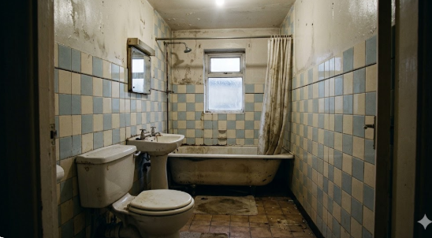
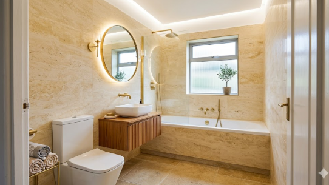
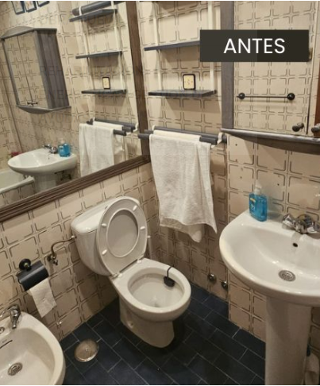
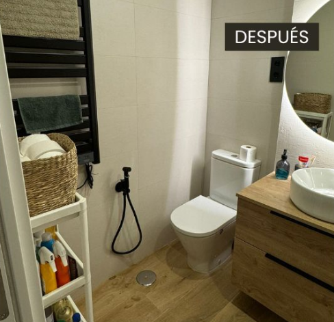
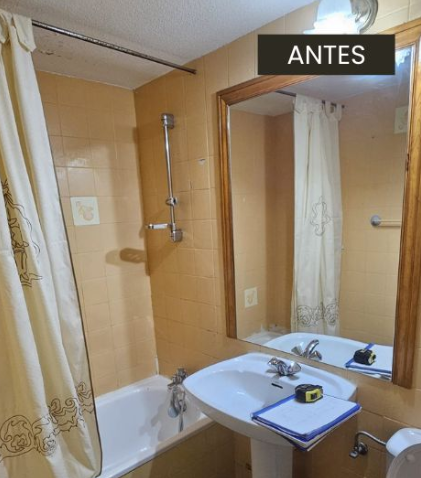
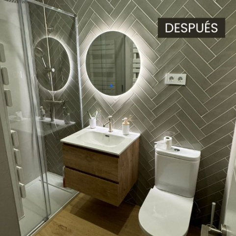
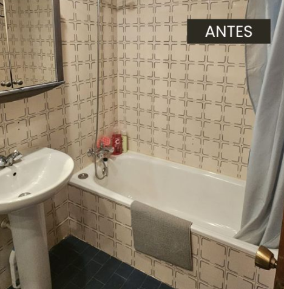
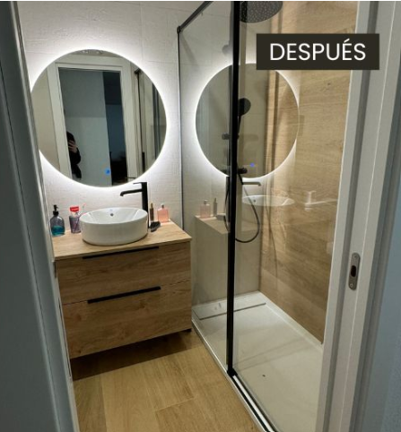

01. Estado Inicial
Revestimientos cerámicos desgastados y distribución poco funcional.

02. Resultado Final
Colocación de sanitarios suspendidos, revestimientos premium y acabados finales.

01. Estado Viejo
Sanitarios antiguos y falta de entrada de luz natural.

02. Terminación
Superficies continuas de microcemento y griferías empotradas negro mate colocadas.

01. Original
Layout obsoleto con bañera masiva incómoda y revestimientos dañados.

02. Resultado Final
Plato de ducha a nivel de piso terminado y mampara industrial de hierro instalada.

01. Original
Instalaciones e infraestructura deterioradas previas al desmontaje.

02. Resultado Final
Grandes piezas cerámicas colocadas, zona de confort e iluminación LED oculta en cielorraso.

01. Espacio Base
Habitación antigua sin revestir utilizada previamente como depósito.

02. Interiorismo Final
Maximización espacial con espejos de gran formato y mobiliario minimalista flotante.